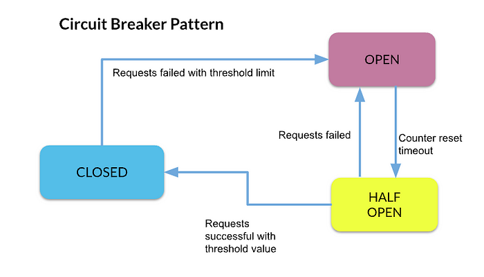
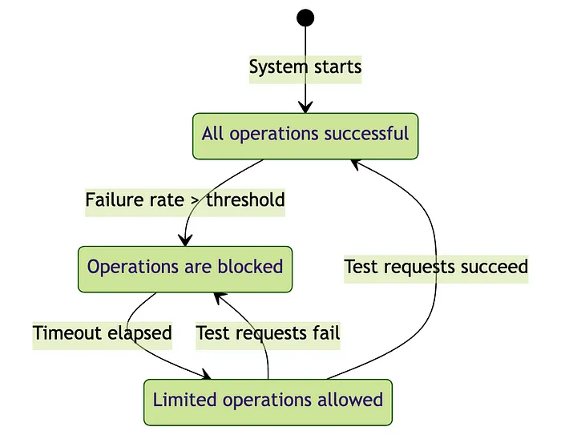

System Design Mastery
Master scalable systems with premium insights
⚡ Circuit Breaker - Stop calling when service is failing
1️⃣ What is it?
A Circuit Breaker is a pattern that:
- Stops calling a failing service temporarily to prevent system overload
- Instead of continuously retrying a failing service, it "breaks the circuit" and fails fast
🔥 Why Circuit Breaker is Needed
In microservices:
Service A → Service B → Service C
If Service C fails, and A keeps retrying:
- System overloads
- Cascading failures happen
- Entire system may crash
Circuit breaker prevents this.
⚡ Simple Example
Imagine: Payment service is down, Order service keeps calling payment
Without circuit breaker:
Order → Payment ❌
Order → Payment ❌
Order → Payment ❌
System becomes slow.
With circuit breaker:
Order → Payment ❌
Circuit opens
Order → Fallback (skip payment / retry later)
System stays stable.
3️⃣ What breaks without it?
Without circuit breaker:
- One slow service blocks others
- Thread pools get exhausted
- Entire system becomes unresponsive
- Retry storms crash the system
5️⃣ Circuit Breaker States (Very Important)
How Circuit
Breaker Works:
It has 3 states:
1️⃣ Closed State (Normal)
- Requests go normally
- System monitors failures
- Client → Service → Response
2️⃣ Open State (Failure)
- Too many failures detected
- Circuit opens
- Requests are blocked immediately
- Client → ❌ Service (blocked)
3️⃣ Half-Open State (Testing)
- After some time, allow a few requests
- If success: ✔ close circuit
- If failure: ❌ open again
🔁 Flow Summary
Closed → Open → Half-Open → Closed

Circuit Breaker States Diagram
6️⃣ How it works (Simple Flow)
Request → Service
↓
If failures > threshold
↓
Circuit opens
↓
Requests blocked
↓
After timeout → test requests

Circuit Breaker Flow Diagram
7️⃣ Real app connection
🛒 E-commerce
Order Service → Payment Service
If Payment fails:
→ Circuit opens
→ Order service stops calling payment
→ Shows fallback response
💬 Example fallback:
"Payment service unavailable, try later"
💳 PayPal / Payment System
User makes payment:
App → Payment Service
If payment service fails repeatedly:
→ Circuit opens
→ App shows:
👉 "Payment temporarily unavailable"
Instead of retrying endlessly.
8️⃣ When to use / When NOT to use
✅ Use Circuit Breaker:
- Microservices architecture
- External API calls
- Remote service calls
- Unreliable services
❌ Avoid when:
- Simple local function calls
- Single monolithic system
- No network dependency
9️⃣ One common mistake
🚨 Only adding retries without circuit breaker
Retries alone:
- Increase load
- Make failure worse
Circuit breaker:
- Stops retries when needed
- Protects system
🔟 If NOT circuit breaker, then what else?
Related patterns:
| Problem | Solution |
|---|---|
| Temporary failure | Retry |
| Slow response | Timeout |
| Overload | Rate limiting |
| Failover | Load balancing |
👉 Best practice:
Use Circuit Breaker + Retry + Timeout together
🔹 Circuit Breaker vs Retry
🧠 Popular Tools of circuit breaker
- Netflix Hystrix (deprecated but famous)
- Resilience4j
- Envoy Proxy
- Istio
🎯 Interview-ready one-liner
Circuit breaker is a fault-tolerance pattern that prevents repeated calls to a failing service by temporarily blocking requests and allowing recovery.
🧠 Summary
- Circuit breaker stops requests to a failing service to prevent cascading failures
- It has three states: closed, open, and half-open to manage failure and recovery
- It improves system resilience by failing fast and protecting resources